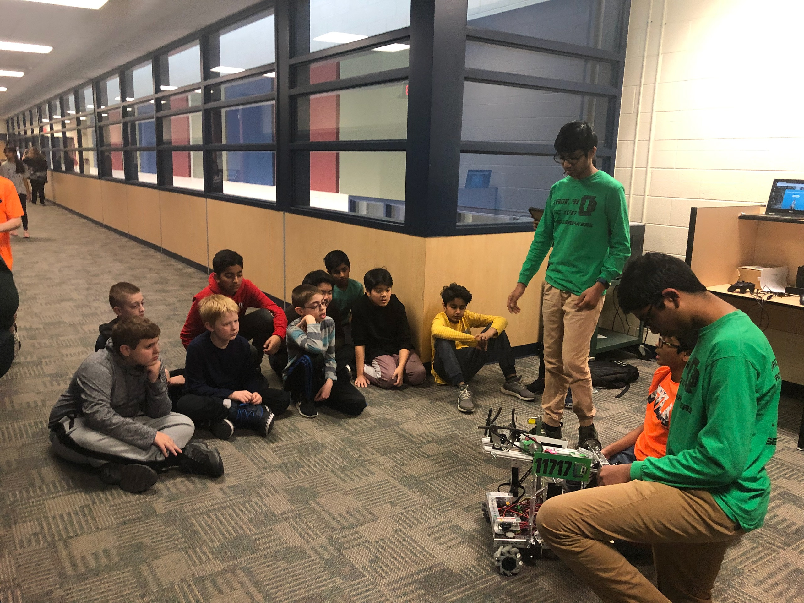

Qualifiers
Auburn Hills Qualifier - Avondale Middle School - Nov 2nd
Troy Qualifier - Troy High School - Nov 9th
OCCRA Qualifer - Rochester - Dec 7th
Community Events
Hammerheads Town Hall
The Hammerheads 226 FRC Team held a town hall, where students in our school district of any age were allowed to attend, and be informed of FIRST and its programs. The attendees of the town hall were promoted to join or start new teams in their own school. Since we were currently looking to recruit new members for our team, we saw this town hall as a great opportunity to meet new students who are attending our school and would want to join a robotics team. To meet new students, we contacted the Hammerheads, and asked them if we could set up a stand at their town hall. We were hoping this would help us find new members, as well as showcase our team and robot.
Kickoff
The Hammerheads 226 FRC Team are hosting a FTC kickoff event with the teams in our area participating. One of our team members is coordinating with them to host workshop events (Robotics Classes before the kickoff) to teach new and old teams new tricks! The years before this, we participated in other workshop events.
Middle School Orientation
The Middle School Orientation day was a huge success for recruiting new team members as well as spreading the knowledge of FIRST. Every year before the school year starts, Our Middle School holds an orientation day or registration day, where students come to the school to take their school pictures and apply for specific classes. Since most of the 800 students in our school attended, it was the perfect time for anyone in the school community to unveil any new clubs, activities or initiatives. We talked to our principal before the event and confirmed our presentation at the school. As the students walked by our stand, they got to learn about FIRST Robotics and our team. We showcased our robot and drove it around showing viewers the end product of a season with our team. We talked to many of the students, sharing our experiences and things we learned during the season. During the entire event, we let people sign up for a season with our team. We were shocked by the number of people that signed up; a total of more than 30 students. This clearly showed us that there was a huge interest in robotics in our school community, which may mean the creation of some new teams during the off-season. The next year sparked more, with some interested getting a better chance to talk with us this time. This event sparked our current website update too. 2 teams and counting were started by enthusiastic parents, and a few wanted to join our team, too.
2019 Elementary Presentation
2 elementary schools received hands-on, in depth presentations with great turn out and sparked interest.
Science "ALL IN" Presentations
We presented our robot at our middle school for kids to inspect and it was a success. Many students came and looked at our robot.
Coding Classes
Last year, Kiran (one of our coaches) taught a Java coding summer camp (the programming language of Minecraft, Android, and FTC robots) to help students learn Java for most of anything, including robotics programmming. This class in detail and taught students most everything they want and need to know to program using Java.
2017 Elementary Presentation
A presentation was given to a local elementary school, with great interest
Helping Hands
At a few of our competitions, we lent parts out to other teams since many had failures. It's all part of gracious professionalism, and making friends with other teams.
